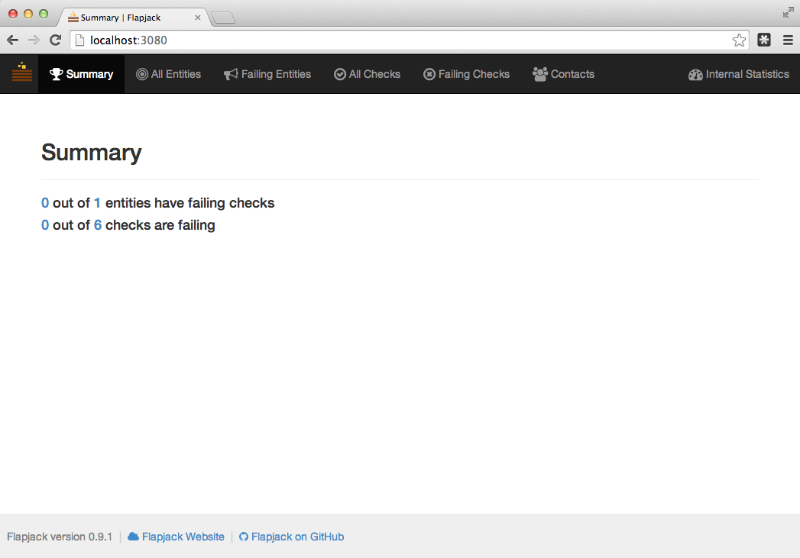
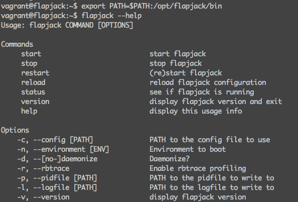
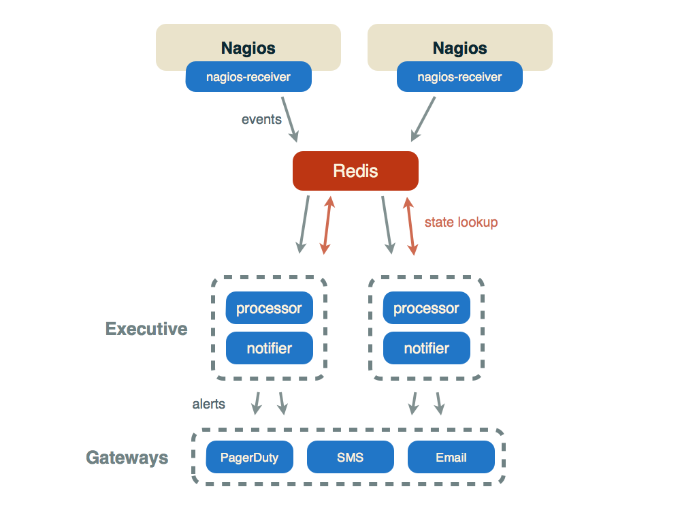
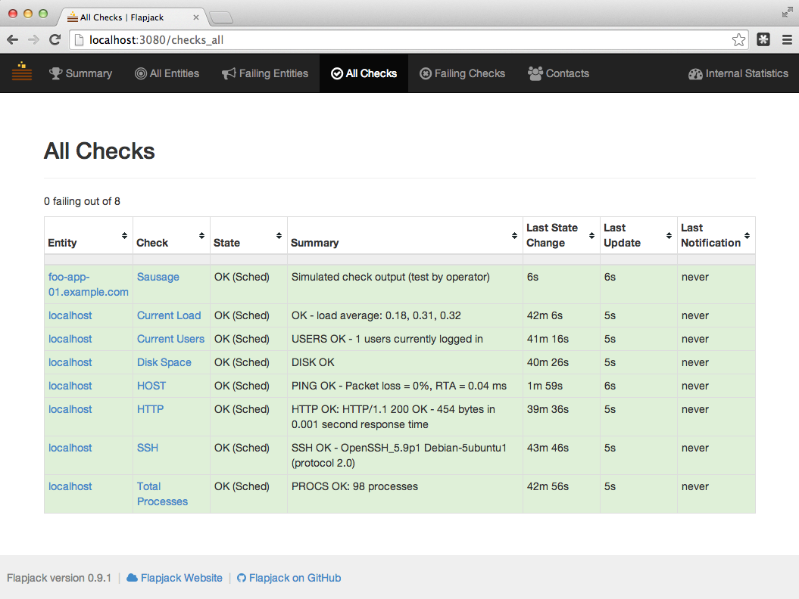
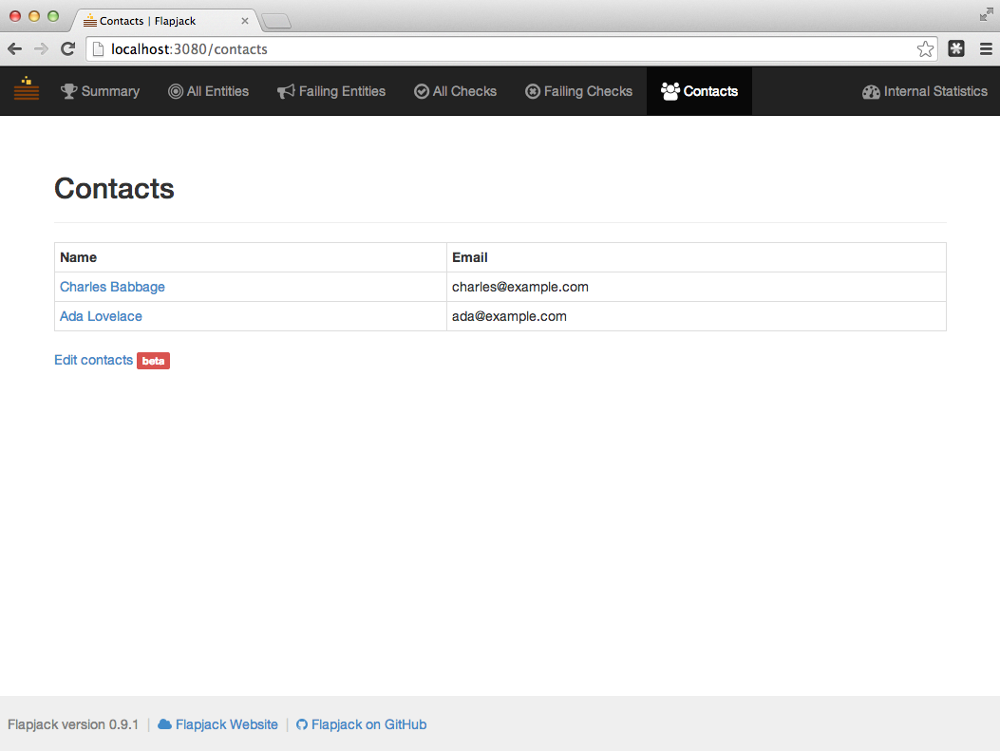
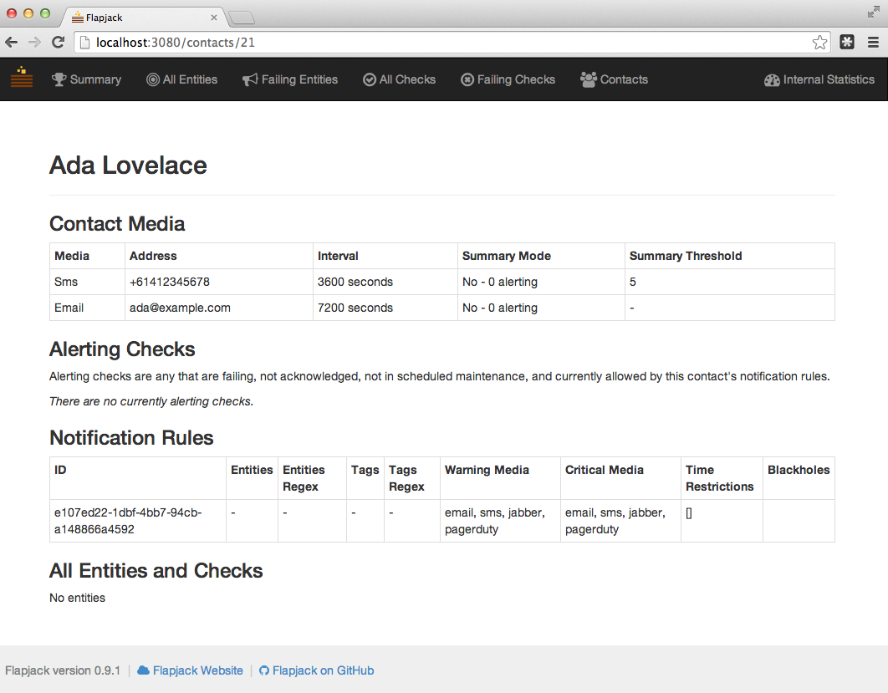
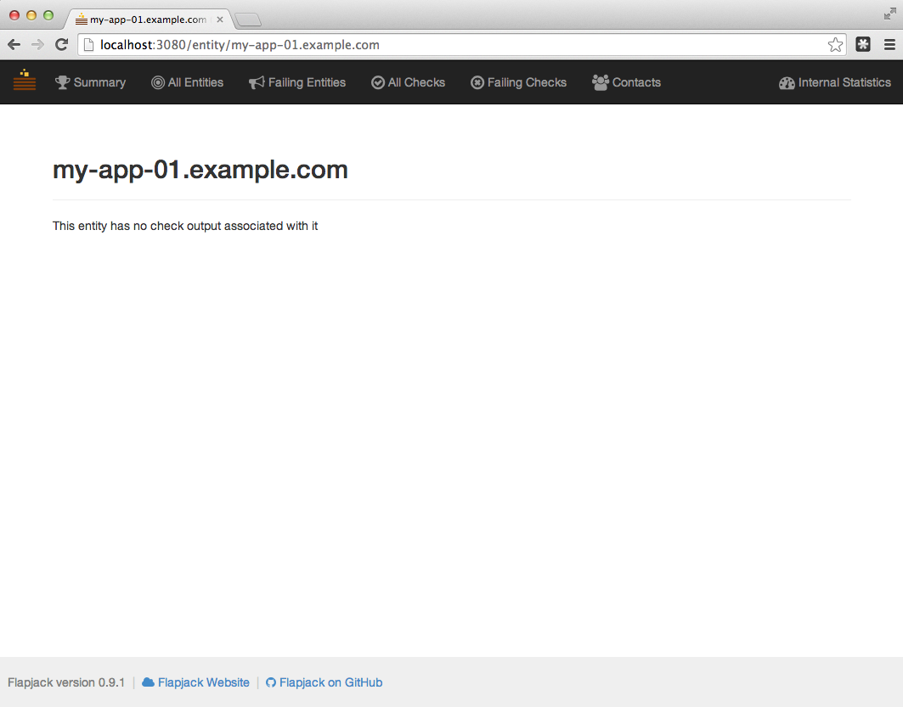

This quickstart guide will get you Flapjack running in a VM locally using Vagrant and VirtualBox.
You’ll also learn the basics of how to:
To skip this tutorial and jump straight to the code, view the project on GitHub.
Get the repo, and build your Vagrant box:
git clone https://github.com/flapjack/vagrant-flapjack.git
cd vagrant-flapjack
vagrant up
For an alternative provider to VirtualBox (e.g. VMware Fusion), you can specify the provider when running vagrant up:
vagrant up --provider=vmware_fusion
Visit http://localhost:3080 from your host workstation. You should see the Flapjack Web UI:

You should also find Icinga and Nagios UIs running at:
| URL | Username | Password |
|---|---|---|
| http://localhost:3083/nagios3 | nagiosadmin | nagios |
| http://localhost:3083/icinga | icingaadmin | icinga |
SSH into the VM:
vagrant ssh
Have a look at the commands under /opt/flapjack/bin:
export PATH=$PATH:/opt/flapjack/bin
# ...
flapjack --help
# ...
simulate-failed-check --help
# ...

Run something like:
simulate-failed-check fail-and-recover \
--entity foo-app-01.example.com \
--check Sausage \
--time 3
This will send a stream of critical events for 3 minutes, and send one ok event at the end. If you want the last event to be a failure as well, use the fail command instead of fail-and-recover.
Reload the Flapjack Web UI and you should now be able to see the status of the check you’re simulating, e.g. at:
http://localhost:3080/check?entity=foo-app-01.example.com&check=Sausage
Both Nagios and Icinga are configured already to append check output data to the following named pipe: /var/cache/icinga/event_stream.fifo.
flapjack-nagios receiver takes check output data from Nagios and turns it into events that Flapjack understands:

All that remains is to configure flapjack-nagios-receiver to read from this named pipe, configure its Redis connection, and start it up.
/etc/flapjack/flapjack_config.yamlnagios-receiver section under production and change the fifo: to be /var/cache/icinga/event_stream.fifosudo /etc/init.d/flapjack-nagios-receiver start
More details on configuration are available on the wiki.
Reload the Flapjack web interface and you should now see the checks from Icinga and/or Nagios appearing there.

Currently Flapjack does not include a friendly web interface for managing contacts and entities, so for now we use json, curl, and the Flapjack API.
The vagrant-flapjack project ships with example json files that you can use in this tutorial, or you can copy and paste the longform curl commands below that include the json.
We’ll be using the POST /contacts API call to create two contacts.
Run the following from your workstation, cd’d into the vagrant-flapjack directory:
curl -w 'response: %{http_code} \n' -X POST -H "Content-type: application/json" \
-d @examples/contacts_ada_and_charles.json \
http://localhost:3081/contacts
Or alternatively, copy and paste the following. This does the same thing, but includes the json data inline.
curl -w 'response: %{http_code} \n' -X POST -H "Content-type: application/json" -d \
'{
"contacts": [
{
"id": "21",
"first_name": "Ada",
"last_name": "Lovelace",
"email": "ada@example.com",
"media": {
"sms": {
"address": "+61412345678",
"interval": "3600",
"rollup_threshold": "5"
},
"email": {
"address": "ada@example.com",
"interval": "7200",
"rollup_threshold": null
}
},
"tags": [
"legend",
"first computer programmer"
]
},
{
"id": "22",
"first_name": "Charles",
"last_name": "Babbage",
"email": "charles@example.com",
"media": {
"sms": {
"address": "+61412345679",
"interval": "3600",
"rollup_threshold": "5"
},
"email": {
"address": "charles@example.com",
"interval": "7200",
"rollup_threshold": null
}
},
"tags": [
"legend",
"polymath"
]
}
]
}' \
http://localhost:3081/contacts
Navigate to Contacts in the Flapjack web UI and you should see Ada Lovelace and Charles Babbage listed:

Selecting Ada should give you something like:

We’ll be using the POST /entities api call to create two entities.
We’re going to assign both Ada and Charles to foo-app-01, and just Ada to foo-db-01.
curl -w 'response: %{http_code} \n' -X POST -H "Content-type: application/json" \
-d @examples/entities_my-app-01_and_my-db-01.json \
http://localhost:3081/entities
Or with json inline if you prefer:
curl -w 'response: %{http_code} \n' -X POST -H "Content-type: application/json" -d \
'{
"entities": [
{
"id": "801",
"name": "my-app-01.example.com",
"contacts": [
"21",
"22"
],
"tags": [
"my",
"app"
]
},
{
"id": "802",
"name": "my-db-01.example.com",
"contacts": [
"21"
],
"tags": [
"my",
"db"
]
}
]
}' \
http://localhost:3081/entities
Visit my-app-01 in the web UI and you should see something like:

Found an error in the above? Please submit a bug report and/or a pull request against the gh-pages branch with the fix.
Something not clear? That’s a bug too!
Got questions? Suggestions? Talk to us via irc, mailing list, or twitter. See Support for details.
Stay tuned for more info on how to configure:
In the mean time, check out: